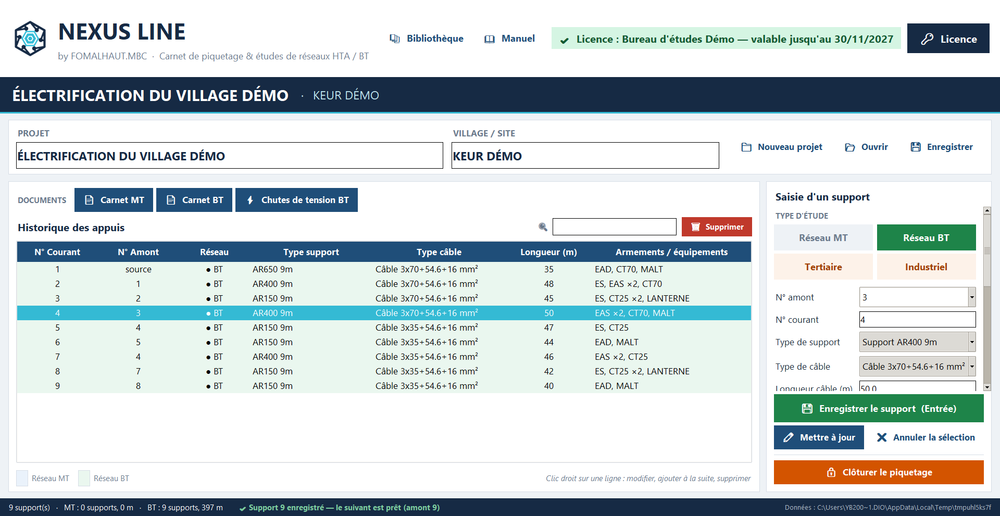
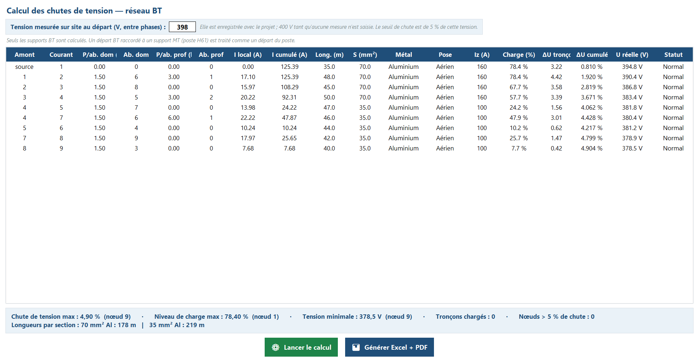
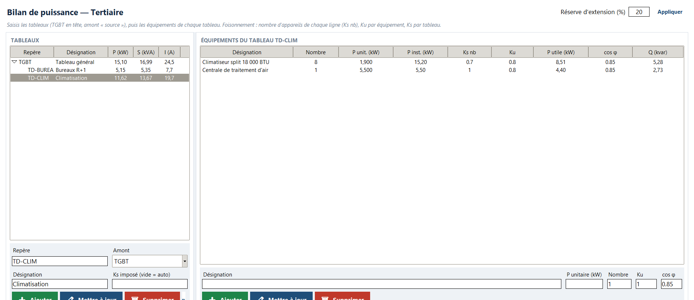
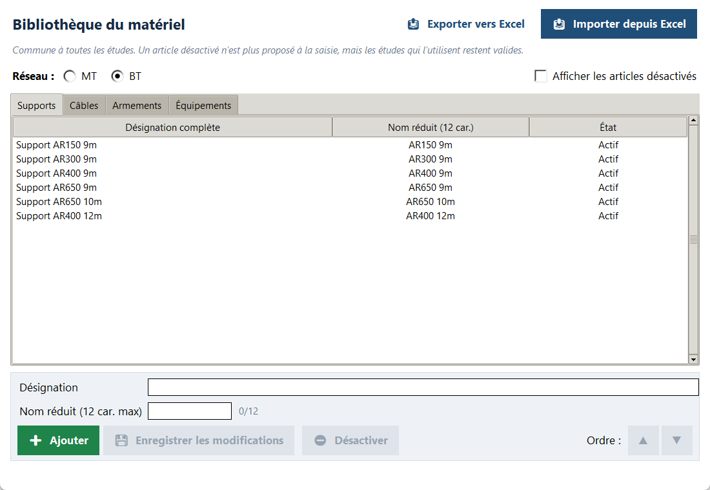
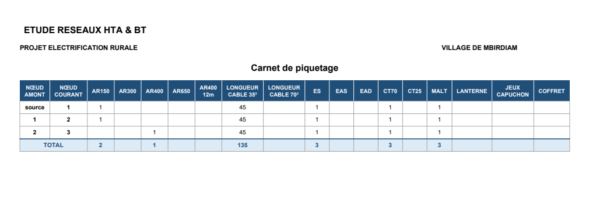

Logiciel édité par FOMALHAUT.MBC
Nexus Line
Carnet de piquetage & études de réseaux HTA / BT
Saisissez vos supports sur le terrain ou au bureau, calculez les chutes de tension et les bilans de puissance, puis produisez en un clic des carnets et notes de calcul prêts à remettre, en Excel et en PDF.

Ce que fait Nexus Line
📍 Carnets de piquetage MT et BT
Saisie support par support : numéros amont et courant, type de support, câble, longueur, armements et équipements. Historique modifiable, recherche, clôture du piquetage.
⚡ Chutes de tension BT
Calcul par tronçon avec foisonnement par tranches (NF C 14-100), tension de départ mesurée sur site, seuil de 5 % et alerte de charge à 80 % de l'intensité admissible.
📊 Bilans de puissance
Bilans tertiaires et industriels par tableau (méthode UTE C 15-105) : coefficients Ks et Ku, réserve d'extension, puissance totale et courant d'emploi au TGBT.
🗂️ Bibliothèque du matériel
Supports, câbles, armements et équipements communs à toutes vos études, avec import et export Excel pour l'adapter à vos propres références.
📄 Documents prêts à remettre
Carnets, récapitulatifs du matériel, notes de calcul et bilans exportés en Excel, PDF et CSV, aux couleurs de votre projet.
🔒 100 % hors ligne
Aucune connexion Internet n'est nécessaire : ni pour l'installation, ni pour l'activation, ni pour le travail sur le terrain. Vos études restent sur votre ordinateur.
Aperçu du logiciel
Cliquez sur une image pour l'agrandir. Données d'un projet de démonstration.

Chutes de tension BT
Calcul par tronçon, charge, tension réelle et statut

Bilan de puissance
Tableaux, équipements, foisonnement et puissance totale

Bibliothèque du matériel
Supports, câbles, armements et équipements

Carnet exporté
Document Excel / PDF prêt à remettre
Version d'essai et licence
🎁 Version d'essai gratuite
Téléchargez et installez Nexus Line sans engagement. Sans licence, le logiciel fonctionne en version d'essai :
- deux études (deux projets) au plus ;
- toutes les fonctions de calcul et d'export disponibles ;
- les documents portent la mention « VERSION D'ÉVALUATION ».
🔑 Licence annuelle par poste
Études illimitées et documents sans mention d'évaluation, pour un an sur un ordinateur. Tarif sur devis.
- Dans Nexus Line, cliquez sur Licence et copiez votre code machine.
- Envoyez-le à FOMALHAUT.MBC par WhatsApp ou e-mail.
- Vous recevez une clé NXL-… : collez-la puis cliquez sur Activer.
Télécharger Nexus Line
⬇ Installation
- Téléchargez le fichier Nexus_Line_Installation.zip.
- Faites un clic droit sur le fichier puis Extraire tout.
- Double-cliquez sur Installer_Nexus_Line_1.2.exe.
- Si Windows affiche « Windows a protégé votre ordinateur », cliquez sur Informations complémentaires puis Exécuter quand même. Ce message est normal pour un logiciel professionnel diffusé directement par son éditeur.
Le téléchargement est bloqué par votre navigateur ? Appelez-nous ou écrivez-nous sur WhatsApp au +221 78 756 98 00 / +221 76 793 00 06 : nous vous envoyons le fichier.
💻 Configuration requise
- Windows 10 ou Windows 11 (64 bits)
- 200 Mo d'espace disque libre
- Écran de 1366 × 768 pixels minimum
- Excel (ou LibreOffice) et un lecteur PDF pour ouvrir les documents produits
🛡️ Fichier officiel
Version 1.2 du 09/11/2026. Empreinte SHA-256 de l'installateur :
167AD3F129EAA47C2912CD8100F5B2462496F7551FE22F2629A6CCC7228D2E27
Une question sur Nexus Line ?
Démonstration, devis de licence, adaptation à vos références de matériel : notre bureau d'études vous répond.